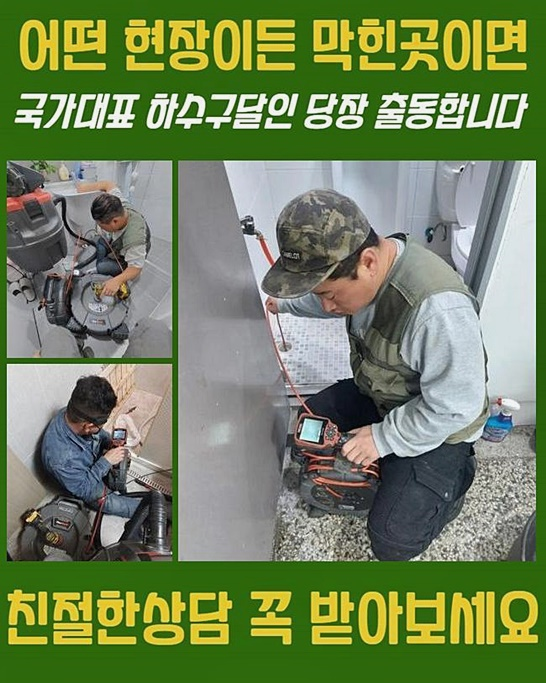
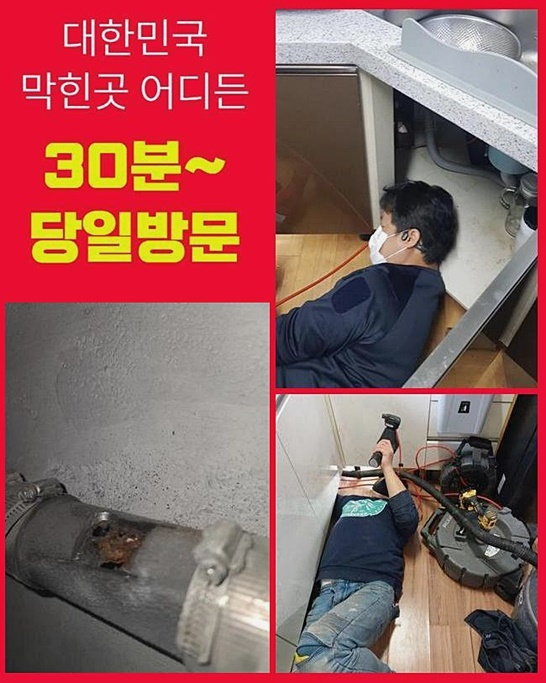
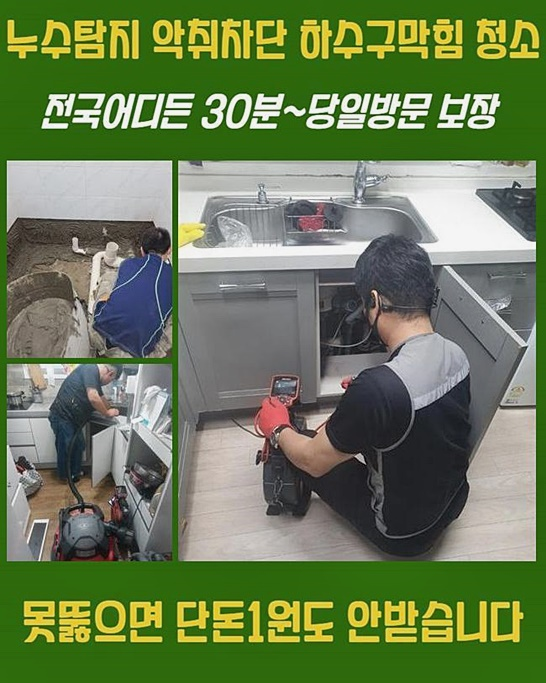
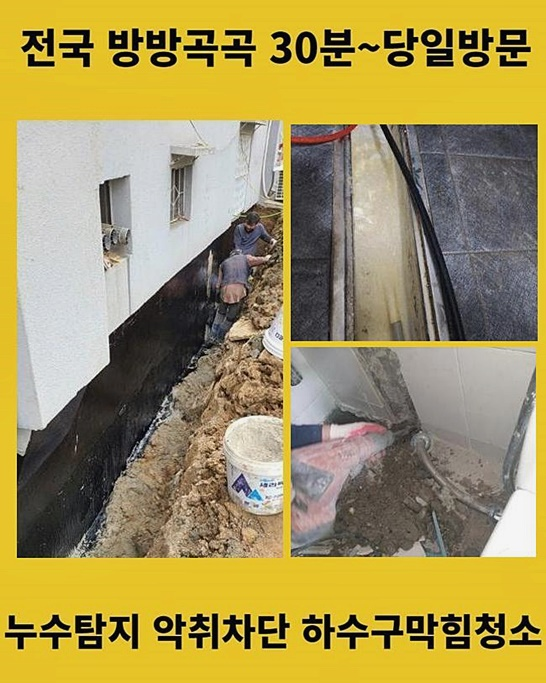
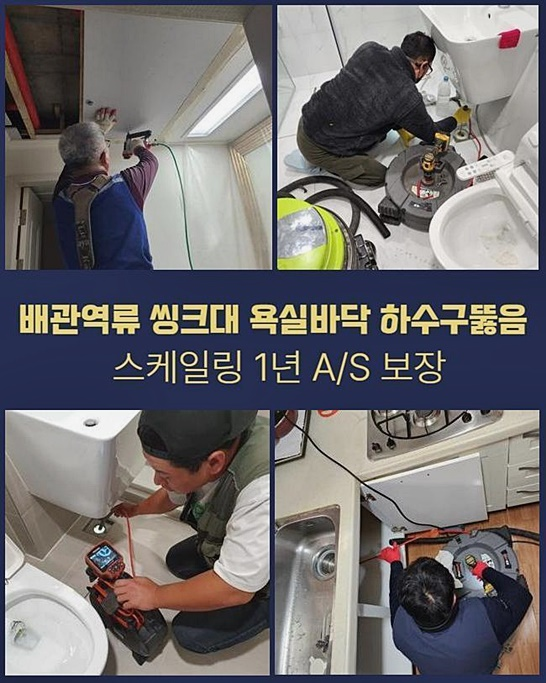

🏠 수원 입북동변기배관막힘 곡반정동 하수구청소장비 물샘전문업체
용인시 처인구 배관막힘 전문 시공 후기

📋 작업 개요
- 위치: 용인시 처인구, 수원시 영통구, 화성시 동탄
- 서비스 유형: 배관막힘, 하수구청소, 배관수리, 고압세척, 내시경점검
- 작업 일시:
- 업체명: 하수구수사대 (010-5615-2118)
🔍 문제 상황
수원 입북동변기배관막힘 곡반정동 하수구청소장비 물샘전문업체
고요한 일상의 연속에서 돌연 하수도가 고장나버린다면 곤란에 처하게 되겠죠
이번내용에서는 배수관로에 막힘이 나타났을때 수행해야할 방법에 대해 공유할 예정이니 기억해두시면 유익하실 것입니다
식자재를 취급하는 식당 업무에 문제가 발생하면 그 시점부터 음식 또한 정해진 시간에 먹는게 어려워지니 굶는 상태가 됩니다
그리고 불결한 폐수가 역류하며 지독한 냄새까지 퍼지면서 불편하다면 즉시 막힘현상들을 정비하고자 조치를 취하게 되죠
취지는 좋다고 생각되지만 우리 전문업체는 비전문가가 하수관 세척을 꼼꼼히 완료하는게 쉽지만은 않은 것으로 말할수 있습니다
집안의 오수들이 넘치게 된 상황에 도달한 경우 확실히 파이프 안쪽에 지방질들과 여러가지 침전물질들이 섞인상황이라 최신 장치 운용이 요구되는 사례가 자주 발생합니다
배수불량을 수리했던 작업지도 비슷한 양상을 보이고 있었습니다
화장실 내부엔 철벅거릴만큼 오수들이 솟구치고 있었고 고약한냄새도 매우 심각하다 했어요
조금의 물길을 열어보려고 청소브러시와 긴 와이어로 직접 시도하셨지만 파손된 배수파이프가 거꾸로 올라와 지면 아래로 습기가 퍼지게 된 상태가 되어 굉장히 심각성을 호소하셨습니다
신속하게 출동하여 문제 위치를 확인해보니 명백히 문제가 있는 상태로 파악되었고 탁한 물에다가 찌꺼기까지 대량으로 흘러넘쳐 하수관 악취또한 심각했습니다

🔎 원인 분석
💡 전문가 진단: 정밀 진단 장비를 사용하여 슬러지의 고착 여부를 판명하고 타격/세척 작업을 실시했습니다.
여러군데를 살피면서 현황을 조사했는데 다행이 개수대 하부에 설치되어 있는 주름파이프에는 이상이 나타나지는 않은 것으로 보였습니다
자가로 해결해보려다가 배수관이 손상되는 일이 종종 일어납니다
표면적인 검사를 마쳤으니 가구 하단부에 하수관에 흡입기를 집어넣어 주요 과업인 막힘 해결방안의 초기 단계를 시작하게 되었습니다
이 기기는 건식 형태가 아니고 남은 물도 없애는 특징이 있기 때문에 파이프를 말끔하게 조성한 후 작업을 시작했습니다
빼곡하게 출렁이는 하수를 처리하는 순서에서 오물들도 함께 배출되는 경우들이 존재합니다
높은 흡입 강도로 수분을 제거했지만 물받이 통에 커다란 오염입자로 의심되는게 발견되지 않았습니다
첫작업과 함께 흐릿한 잔수들은 제거했으니 다음 절차로 하수구 안쪽에 고기능 카메라를 들여보내 배관 내부 점검을 진행하였습니다
길게 뻗은 관 끝부분에 영상 기기가 장착되어 어둡고 협소한 하수구라도 문제없이 이곳저곳 점검할 수 있습니다
내시경카메라를 통하여 확인되는 붉은색의 성분들이 지방이 응집된 것인데 이 기름뭉텅이인 슬러지가 매달린 비위생적인 모습들이 보여졌어요
더 깊숙한 곳으로 자리를 잡으니 크기가 매우 커진 기름 뭉텅이가 관찰되었어요
배수관의 통로만 줄어든게 아닌 속을 꽉 막은 오염덩어리가 있었어요
문제들을 초래한 주요원인을 알게 되었으니 발견한 사실들과 작업 플랜을 공유하고 업무절차를 진행합니다

🔧 작업 과정
호스를 잡고서 내시경장비를 꺼냈더니 점성을 보이는 기름찌꺼기들이 기기 외측에 부착되어 역겨운 냄새가 공간을 채웠어요
오염 상태가 심했음을 의미하니 추측해 보건데 늘 곰팡이들이 계속하여 생긴다거나 지속적인 악취 때문에 어려움도 있었을거라 예상했습니다
파이프 안쪽을 말끔하도록 조치한다면 이와같은 불편사항까지도 제거 가능합니다
끈끈하게 뭉쳐진 오물들을 걸레로 치워내고 재차 배수관속에 삽입하여 작업계획을 수립했습니다
음식잔여물이나 실리콘 조각등의 고체들이 머물러있다면 고리를 이용하는 스타일로 해결했겠지만 기름덩어리가 막힘의 시초이니 회전력을 가진 샤프트장비의 능력을 동원해야 하는 순간이었습니다
샤프트장치는 하수관에 굳어진 지방질이나 이물질을 분쇄하여 하수관밖으로 뺴내어 주는데 주요한 기능을 하는 도구입니다
말미에 헤드쪽이 체인처럼 단단하기에 끈적한 슬러지들을 파쇄하는 기능도 성공적으로 수행하게 됩니다
가정내의 하수관 막힘의 원인이 잔여 오일찌꺼기라면 대체로 항상 사용하는 장치중 한종류입니다
배관속을 동영상으로 기록해서 차단이 생긴 구역을 명확히 관찰하면서 차례대로 세척작업을 실시했습니다
슬러지를 철저하게 분할하고 분쇄하는 과정을 지나면 흡입기기를 이용해 빨아들이며 위로 빼내면서 청결한 배수관으로 변하게 되었습니다
나뉘고 분해된 덩어리들을 힘을 주어 아래로 보내버리면 하부에 쌓이게되어 해결하기 까다로운 경우까지 초래할지 모르니 작업의 자취는 흡입장비로 불편하지만 흡입하는 작업을 각 장소에서 진행합니다
많은 사람들이 함께 이용하는 거대한 하수 처리설비에 이물질 때문에 생긴 막힘이 발생했다면 작업의 양이 굉장하게 많으니 압력으로 배출하는 방안을 사용하게 됩니다
주택 내부 배수관 문제들이 일어난 상황이라면 알아낸 주요요인들을 해결하는 것에 목표를 설정하고 정비하고 있습니다
좀 성가신 일이지만 철저하게 하수구 내부 환경을 향상해 놓으면 동일한 사유로 시간을 쓸데없이 허비할 필요가 없죠
이왕 수리를 제공하는 김에 확실하게 맡아서 문제요인은 물론이고 미래의 상황 예측까지 모든면에서 책임감을 갖는 것이 배수관 정비업체의 의무라고 여깁니다
개수대 배수관 수리를 모두 끝낸다음 작업현장을 재차 검토해보니 깨끗한 물이 흘러가고 있음을 확인했습니다
붉은색 오염요인이 남겨지지 않고 모두 꺼내서 처분했으니 유사한 장애들이 또 발생할 위험이 매우 드물다고 추측됩니다
보이는 정보들을 확인했다면 구체적인 개선들을 살피기 위해 물 흐름진단을 해보았어요
미처 생각하지 못한 오작동들이나 막힌 구역이 남아있을 수도 있으니 물을 꽉 담은 후 하수관 속으로 쏟았어요


✅ 작업 완료
감사하게도 막힘없이 매끄럽게 흐르기에 오늘의 수리작업이 문제없음을 안심하게 되었어요
갖은 비전문용품으로 급하게 뚫어보다가는 배수구가 파손되어 대규모의 손해가 생길 가능성이 있으므로 하수구 복구 기술자를 탐색하고 방문요청하신 후 곤경을 극복하시기를 추천드리고 있습니다
배수관의 문제 상황은 발빠른 대처가 상당히 중요한데 어느지역이든 1시간 이면 도착할 수 있기 때문에 불안감을 느끼지 않으셔도 됩니다
덧붙여 정직한 가격 책정으로 경제적 부담 역시 소통함으로써 낮추고자 하오니 불필요한 염려는 덜고 연락 주시면 신속히 방문드리겠습니다
정밀한 점검을 근간으로 흠없이 깨끗한 하수관 정비를 실현하여 기대에 부응하겠습니다


⚠️ 하수구 배관 막힘 예방 및 관리 가이드
- ✅ 머리카락, 비닐, 물티슈 등 물에 분해되지 않는 이물질은 절대 흘려보내지 마세요.
- ✅ 기름기 많은 식기는 설거지 전 키친타올로 먼저 기름때를 닦아내세요.
- ✅ 주기적으로 배수구에 뜨거운 물을 가득 부어주어 유지방 고착을 방지하세요.
- ✅ 작업 후 1년 이내 재발 시 무상 A/S 보증 서비스를 제공합니다.
💡 핵심 정리
- 확실한 장비 작업(내시경 점검 및 샤프트 스케일링)으로 원인을 뿌리 뽑습니다.
- 작업 후 1년 이내에 동일한 부위 재발 시 100% 무상 A/S 서비스를 보장합니다.
- 서울 · 경기 · 인천 전 지역에 24시간 언제든 긴급 출동할 수 있도록 항시 대기 중입니다.
❓ 자주 묻는 질문 (FAQ)
🚨 용인시 처인구 배관막힘 문제로 고민이신가요?
정확한 원인 진단과 확실한 시공으로 재발 없는 해결을 약속드립니다.
24시간 긴급 출동 | 서울 · 경기 · 인천 전지역 | 1년 내 재발 시 무상 A/S